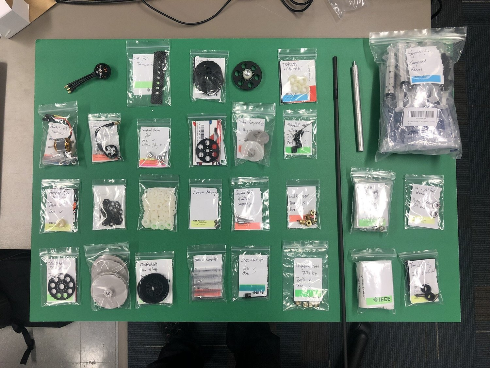
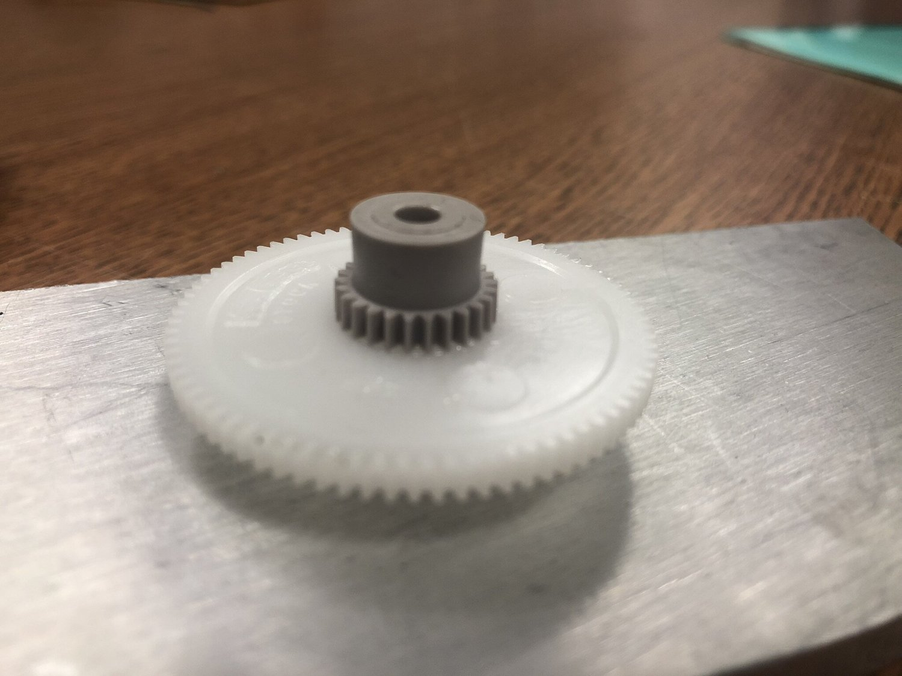
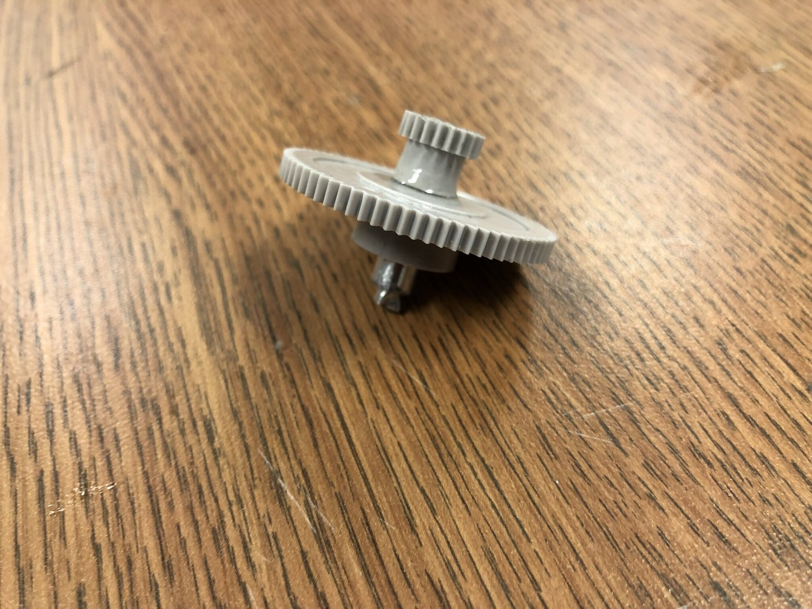
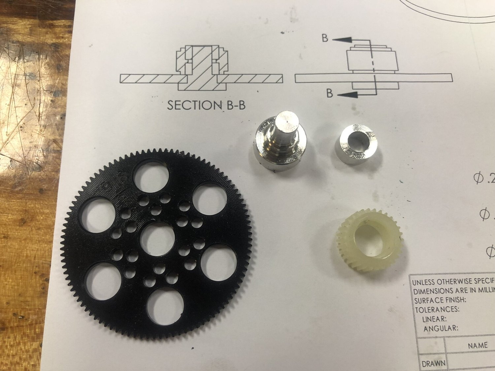
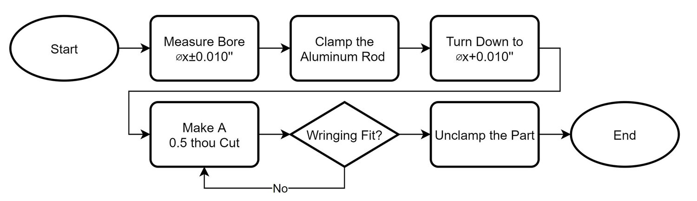
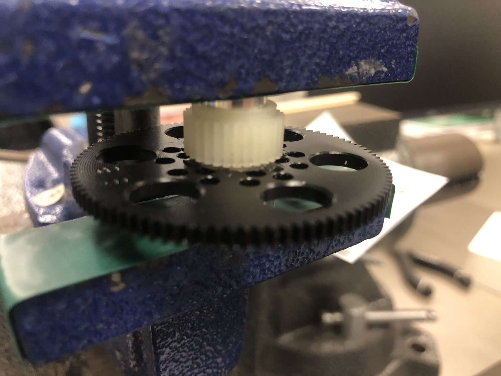

Gearbox

The gearbox itself takes only 5 hours to make, but before that, it took me two months to jump around the coupling between gear availability, compound gear centering tolerance, motor selection and wing kinematics.
It took me 2 week to figure out what I really need is not those industrial acetal gears, but actually those hobbyist toy gears. They are lightweighted and thin, thus making my ornithopter gearbox enough compact. The bad thing is, hobbyist gears have non-interchangable conventions: metrics/english, 20deg/14deg pressure angle, with/without dedendum. I brought many wrong gears.

All the wrong parts
I also made many failed compound gears.

Glue climbs onto the teeth

cocentric-helper component stuck in the bore
The final compound gear is assembled with two cocentric-helper component. I want the the compound gear to be centered as good as possible. This requries my two-helper component to each concentric. Moreover, all fittings between helper components and gear bore should be light transition fit (maybe wringing fit).

Lathed helper components
The good thing of machining the part myself is that, with my operation procedure, I do not really need to know any tolerance table. Nor do I need to know how to measure dimension to a high precision (0.001’’).

My operating procedure is very friendly to a lathe novice like me.

I finally get a compound gear
I want to sleep now…. let me continue writing it some other day….
Acknowledgement:
Supported by Wilson Student Team Center. As always, thank you Casey my friend.